Definition 5.4.1.
Let \(f(x)\) be continuous over an interval. The indefinite integral of \(f(x)\) represents the most general antiderivative of \(f(x)\) and is denoted
\begin{equation*}
\displaystyle\int f(x)\, dx
\end{equation*}
[cross-reference to target(s) "fs-id1165043092431" missing or not unique] and the Rule: Properties of the Definite Integral in Section 5.2. Let’s look at a few examples of how to apply these rules.
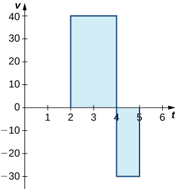
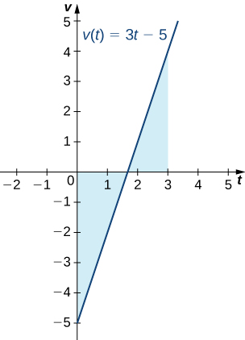
![Two graphs of the same function f(x) = 3x^8 - 2, side by side. It is symmetric about the y-axis, has x-intercepts at (-1, 0) and (1, 0), and has a y-intercept at (0, -2). The function decreases rapidly as x increases until about -0.5, where it levels off at -2. Then, at about 0.5, it increases rapidly as a mirror image. The first graph is zoomed-out and shows the positive area between the curve and the x-axis over [-2, -1] and [1, 2]. The second is zoomed-in and shows the negative area between the curve and the x-axis over [-1, 1].](external/ch5/CNX_Calc_Figure_05_04_005.jpg)
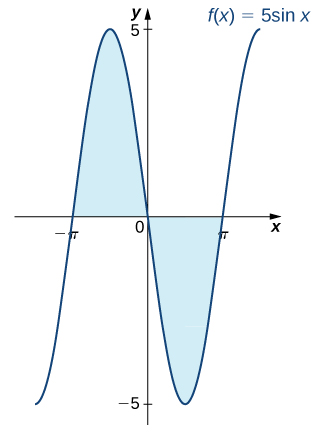
| Hour | Power | Hour | Power |
|---|---|---|---|
| \(1\) | \(28\) | \(13\) | \(48\) |
| \(2\) | \(25\) | \(14\) | \(49\) |
| \(3\) | \(24\) | \(15\) | \(49\) |
| \(4\) | \(23\) | \(16\) | \(50\) |
| \(5\) | \(24\) | \(17\) | \(50\) |
| \(6\) | \(27\) | \(18\) | \(50\) |
| \(7\) | \(29\) | \(19\) | \(46\) |
| \(8\) | \(32\) | \(20\) | \(43\) |
| \(9\) | \(34\) | \(21\) | \(42\) |
| \(10\) | \(39\) | \(22\) | \(40\) |
| \(11\) | \(42\) | \(23\) | \(37\) |
| \(12\) | \(46\) | \(24\) | \(34\) |
| Hour | Power | Hour | Power |
|---|---|---|---|
| \(1\) | \(8\) | \(13\) | \(12\) |
| \(2\) | \(6\) | \(14\) | \(13\) |
| \(3\) | \(5\) | \(15\) | \(14\) |
| \(4\) | \(4\) | \(16\) | \(15\) |
| \(5\) | \(5\) | \(17\) | \(17\) |
| \(6\) | \(6\) | \(18\) | \(19\) |
| \(7\) | \(7\) | \(19\) | \(18\) |
| \(8\) | \(8\) | \(20\) | \(17\) |
| \(9\) | \(9\) | \(21\) | \(16\) |
| \(10\) | \(10\) | \(22\) | \(16\) |
| \(11\) | \(10\) | \(23\) | \(13\) |
| \(12\) | \(11\) | \(24\) | \(11\) |
| Second | Watts | Second | Watts |
|---|---|---|---|
| \(1\) | \(600\) | \(10\) | \(1200\) |
| \(2\) | \(500\) | \(11\) | \(1170\) |
| \(3\) | \(575\) | \(12\) | \(1125\) |
| \(4\) | \(1050\) | \(13\) | \(1100\) |
| \(5\) | \(925\) | \(14\) | \(1075\) |
| \(6\) | \(950\) | \(15\) | \(1000\) |
| \(7\) | \(1050\) | \(16\) | \(950\) |
| \(8\) | \(950\) | \(17\) | \(900\) |
| \(9\) | \(1100\) | \(18\) | \(780\) |
| Minutes | Watts | Minutes | Watts |
|---|---|---|---|
| \(15\) | \(200\) | \(165\) | \(170\) |
| \(30\) | \(180\) | \(180\) | \(220\) |
| \(45\) | \(190\) | \(195\) | \(140\) |
| \(60\) | \(230\) | \(210\) | \(225\) |
| \(75\) | \(240\) | \(225\) | \(170\) |
| \(90\) | \(210\) | \(240\) | \(210\) |
| \(105\) | \(210\) | \(255\) | \(200\) |
| \(120\) | \(220\) | \(270\) | \(220\) |
| \(135\) | \(210\) | \(285\) | \(250\) |
| \(150\) | \(150\) | \(300\) | \(400\) |
| \(k\) | Percentage | \(k\) | Percentage |
|---|---|---|---|
| \(0\) | \(3.5\) | \(21\) | \(1.5\) |
| \(1\) | \(4.1\) | \(22\) | \(1.4\) |
| \(2\) | \(5.9\) | \(23\) | \(1.3\) |
| \(3\) | \(5.7\) | \(24\) | \(1.3\) |
| \(4\) | \(5.9\) | \(25\) | \(1.1\) |
| \(5\) | \(5.4\) | \(26\) | \(1.0\) |
| \(6\) | \(5.5\) | \(27\) | \(0.75\) |
| \(7\) | \(5.1\) | \(28\) | \(0.8\) |
| \(8\) | \(4.8\) | \(29\) | \(1.0\) |
| \(9\) | \(4.1\) | \(30\) | \(0.6\) |
| \(10\) | \(4.3\) | \(31\) | \(0.6\) |
| \(11\) | \(3.5\) | \(32\) | \(0.5\) |
| \(12\) | \(3.7\) | \(33\) | \(0.5\) |
| \(13\) | \(3.2\) | \(34\) | \(0.4\) |
| \(14\) | \(3.0\) | \(35\) | \(0.3\) |
| \(15\) | \(2.8\) | \(36\) | \(0.3\) |
| \(16\) | \(2.5\) | \(37\) | \(0.3\) |
| \(17\) | \(2.2\) | \(38\) | \(0.2\) |
| \(18\) | \(2.2\) | \(39\) | \(1.8\) |
| \(19\) | \(1.8\) | \(40\) | \(2.3\) |
| \(20\) | \(2.1\) | \(41\) |
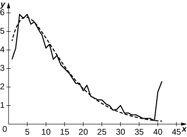
| Taxable Income Range | The Tax Is … | … Of the Amount Over |
|---|---|---|
| \(\$0\)–\(\$8925\) | \(10\%\) | \(\$0\) |
| \(\$8925\)–\(\$36,250\) | \(\$892.50 + 15\%\) | \(\$8925\) |
| \(\$36,250\)–\(\$87,850\) | \(\$4,991.25 + 25\%\) | \(\$36,250\) |
| \(\$87,850\)–\(\$183,250\) | \(\$17,891.25 + 28\%\) | \(\$87,850\) |
| \(\$183,250\)–\(\$398,350\) | \(\$44,603.25 + 33\%\) | \(\$183,250\) |
| \(\$398,350\)–\(\$400,000\) | \(\$115,586.25 + 35\%\) | \(\$398,350\) |
| \(> \$400,000\) | \(\$116,163.75 + 39.6\%\) | \(\$400,000\) |
| Highway Speed Range (mph) | Vehicles per Hour per Lane | Density Range (vehicles/mi) |
|---|---|---|
| \(> 60\) | \(< 600\) | \(< 10\) |
| \(60\)–\(57\) | \(600\)–\(1000\) | \(10\)–\(20\) |
| \(57\)–\(54\) | \(1000\)–\(1500\) | \(20\)–\(30\) |
| \(54\)–\(46\) | \(1500\)–\(1900\) | \(30\)–\(45\) |
| \(46\)–\(30\) | \(1900\)–\(2100\) | \(45\)–\(70\) |
| \(< 30\) | Unstable | \(70\)–\(200\) |
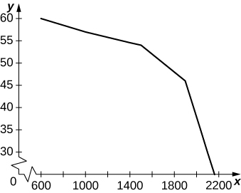
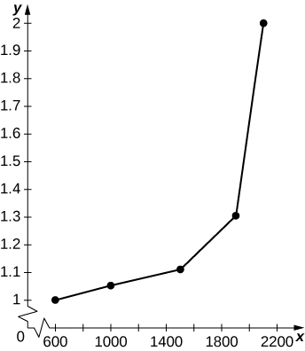
| Year | Population of Breeding Pairs of Bald Eagles |
|---|---|
| \(1963\) | \(487\) |
| \(1974\) | \(791\) |
| \(1981\) | \(1188\) |
| \(1986\) | \(1875\) |
| \(1992\) | \(3749\) |
| \(1996\) | \(5094\) |
| \(2000\) | \(6471\) |
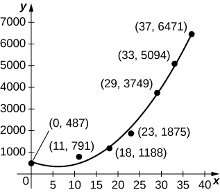
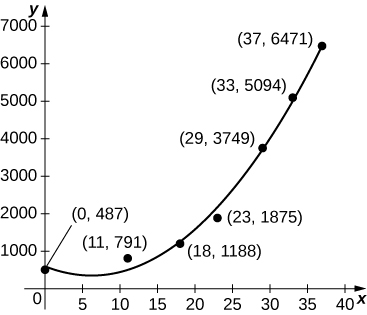
| Time (hr) | Speed (mph) |
|---|---|
| \(0\) (start) | \(50\) |
| \(1\) | \(40\) |
| \(2\) | \(50\) |
| \(3\) | \(60\) |
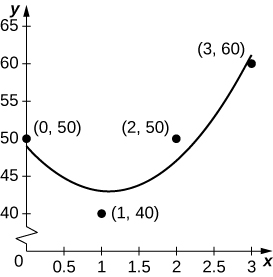
| Time (sec) | Acceleration (mph/sec) |
|---|---|
| \(1\) | \(11.2\) |
| \(2\) | \(10.6\) |
| \(3\) | \(8.1\) |
| \(4\) | \(5.4\) |
| \(5\) | \(0\) |
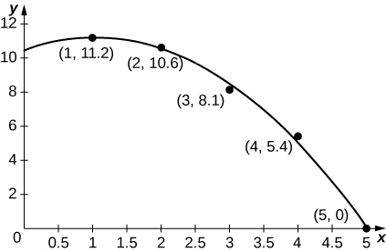
| Hours Past Midnight | No. of Burgers Sold |
|---|---|
| \(9\) | \(3\) |
| \(12\) | \(28\) |
| \(15\) | \(20\) |
| \(18\) | \(30\) |
| \(21\) | \(45\) |
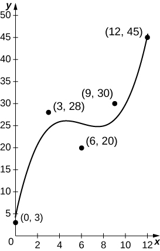
| Minutes | Speed (m/sec) |
|---|---|
| \(0\) | \(5\) |
| \(10\) | \(4.8\) |
| \(20\) | \(3.6\) |
| \(30\) | \(3.0\) |
| \(40\) | \(2.5\) |
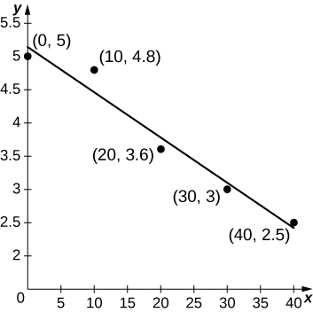
![Runestone Academy logo]()
![MathJax logo]()